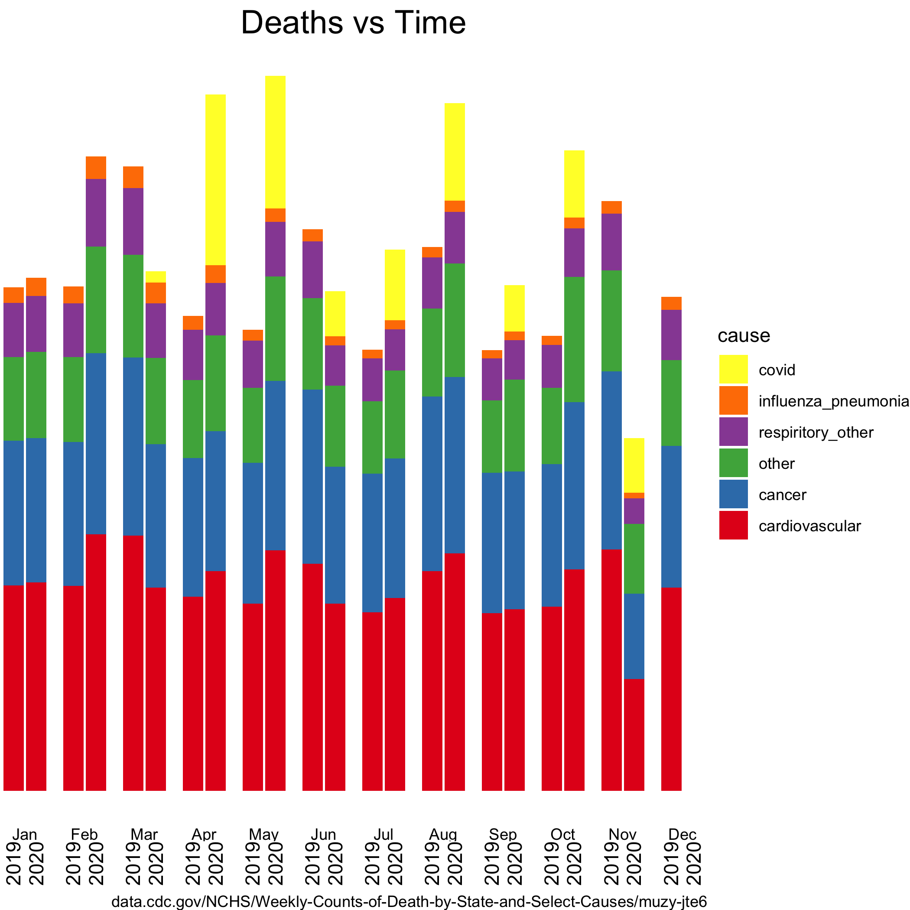
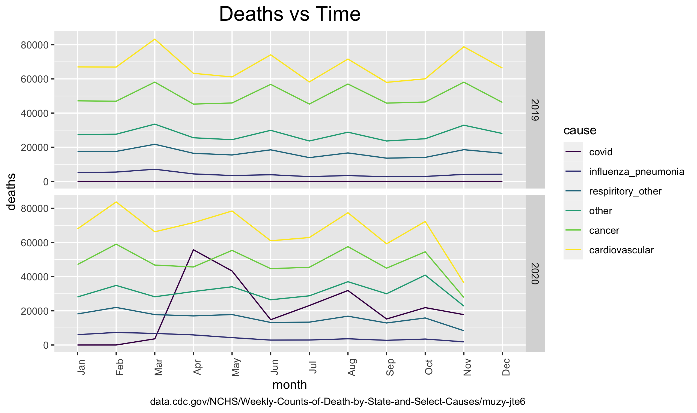

COVID deaths
I'm comparing deaths from natural causes (not homocide) between 2020 and 2019. After my interest was piqued by a retracted article from John's Hopkins University, I went to the CDC to acquire data. After some tinkering, I figured decided to use facets to squeeze two categories (year, month) on the x-axis while being able to stack (categorical) diseases on the y-axis.
These were generated by the following code.
library(tidyverse) #Color info: display.brewer.all() ## Line Plot: take2 ggplot(d20c, aes(x=month, y=deaths, group = cause, color = cause)) + geom_line() + facet_grid(year ~ .) + labs(caption = "data.cdc.gov/NCHS/Weekly-Counts-of-Death-by-State-and-Select-Causes/muzy-jte6", title = "Deaths vs Time") + theme(axis.text.x = element_text(angle = 90), plot.title = element_text(hjust = 0.5, size = 18)) + ggsave("/Users/nvence/prog/COVID-19/data_CDC/COVID_bar_chart.png")